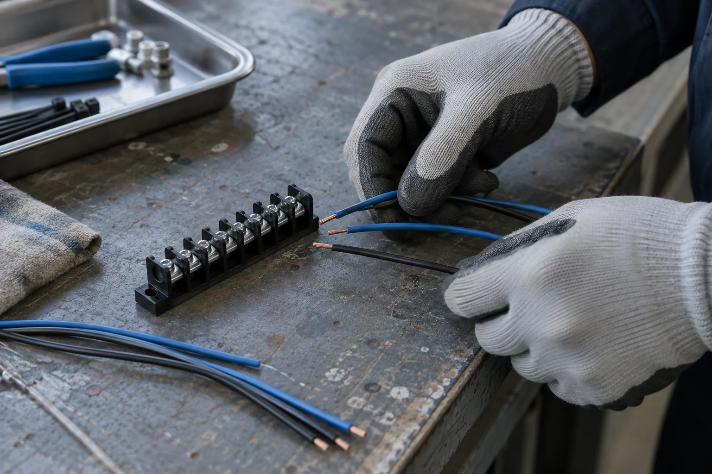
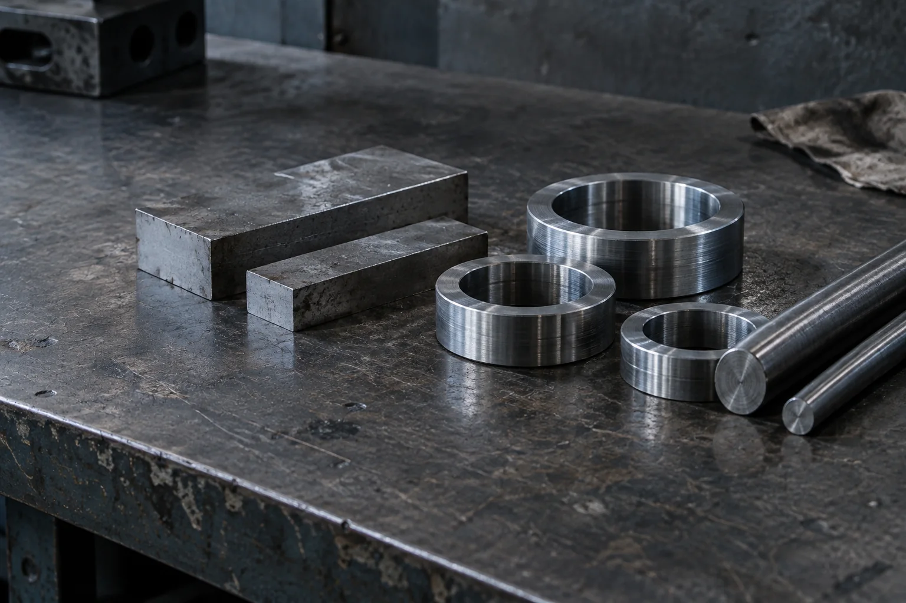
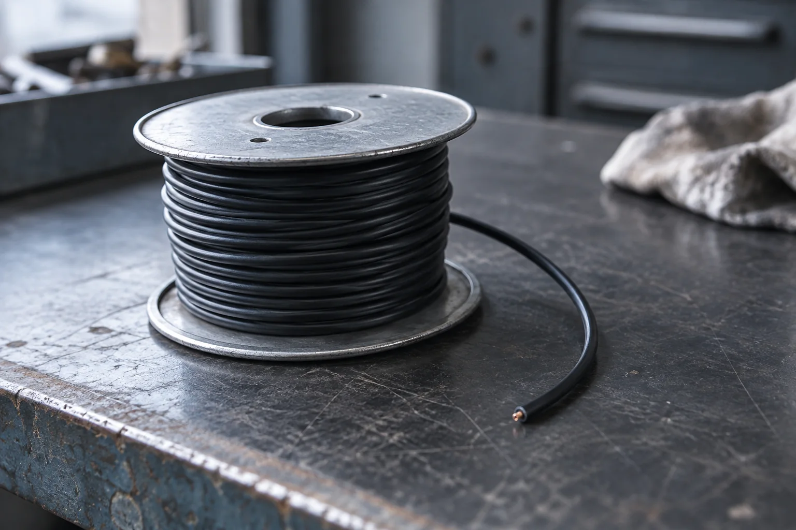
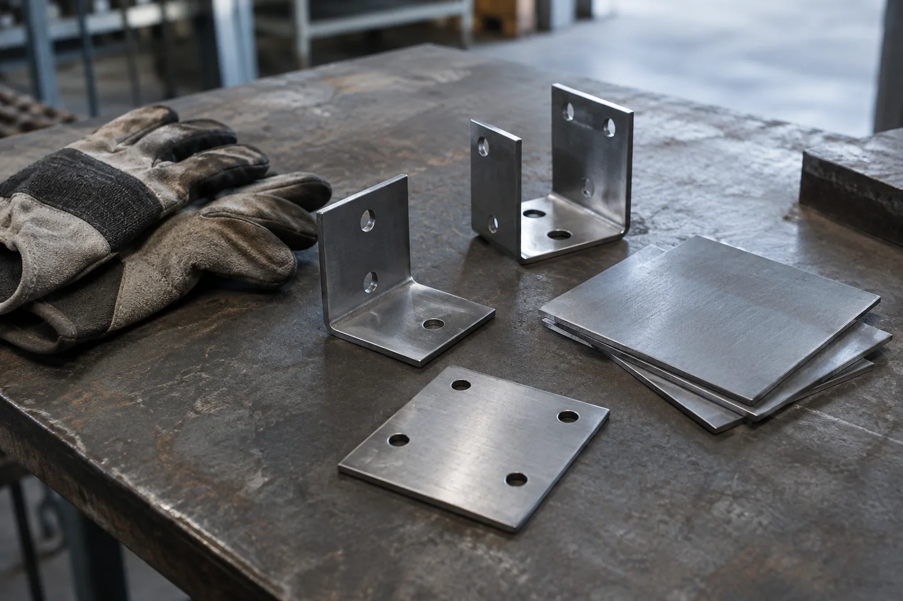

01 CONTROL
クレーン用制御機器・
電気部品
クレーンの制御に関わる機器や電気部品を製作しています。磁力で鉄材などを吸着する、リフティングマグネットも製作品目のひとつです。
主な取扱品目
クレーン用制御機器 / クレーン用電気部品 / リフティングマグネット

01 / BUSINESS & PRODUCTS
電気機器と、金属・部材の加工。
3つの領域からご紹介します。

01 CONTROL
クレーンの制御に関わる機器や電気部品を製作しています。磁力で鉄材などを吸着する、リフティングマグネットも製作品目のひとつです。
クレーン用制御機器 / クレーン用電気部品 / リフティングマグネット

02 POWER SUPPLY
ケーブルやホースを巻き取り、送り出すための装置を製作しています。回転部や移動する機器への給電に用いる、旋回集電器・パンタグラフも取り扱っています。
ケーブル・ホース巻取装置 / 旋回集電器 / パンタグラフ

03 FABRICATION
各種ダクト・ケーブルラックの製作と、薄板板金・一般製缶・機械加工を行っています。電気を通しにくい材料を加工する、絶縁材料加工も事業に含まれます。
ダクト・ケーブルラック / 薄板板金 / 一般製缶 / 機械加工 / 絶縁材料加工
02 / COMPANY
有限会社高橋電機製作所
愛媛県新居浜市
組合企業紹介の掲載情報をもとに作成。
2026年9月9日参照。
| 会社名 | 有限会社高橋電機製作所 |
|---|---|
| 本社・工場 | 〒792-0814 愛媛県新居浜市城下町4番8号 |
| 観音原工場 | 〒792-0851 愛媛県新居浜市観音原町甲1番8号 |
03 / CONTACT
製作・加工についてのご相談を、
こちらの窓口から。
電話（本社・工場）0897-41-4533
メールtakaden1@nbn.ne.jp
参考サイトのため送信できません。
電話・メールも発信しません。
参考サイトのため送信できません。架空の内容でお試しください。入力内容は送信・保存されません。
このボタンは表示確認用です。